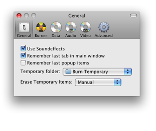
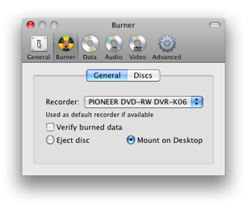
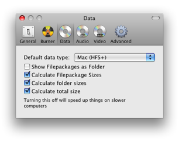
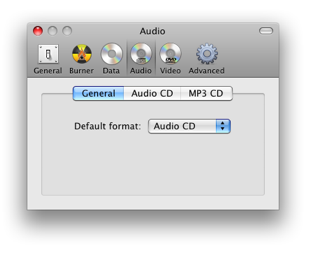
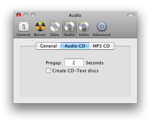
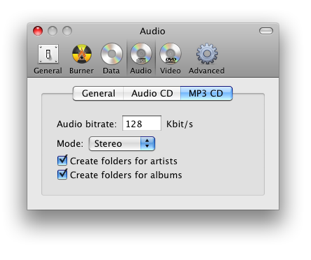
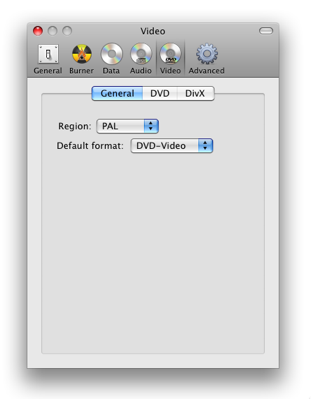
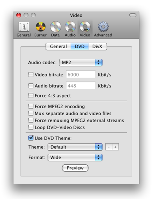
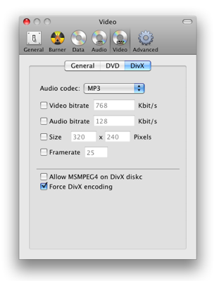
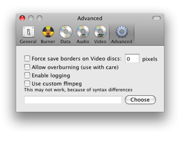

Preferences
Burn has a lot of settings. We'll discuss them here.
General:

General settings for the interface of Burn. Also settings
for the temporary files and how to handle them.
Burner:

Default
burner and settings used after burning.

The first setting will show overwritable space in Burns window. The
last options are in use when there's no disc in the burner.
Data:

You can set the default data format if Burn isn't remembering
the last popups (General). Filepackages are folders treated as files,
you can set how Burn will show them. You can also set different size
options. The last one is the most proccesor intensive.
Audio:

You can set the default audio format if Burn isn't
remembering the last popups (General).

Settings for an Audio-CD disc. Pregap is the number of seconds before
an audio track starts. CD-Text can be added to a disc. Some CD-Players
can use it to get information about the track (like artist, album etc).
But it must be supported by the burner.

Settings for a MP3 disc. The audio bitrate is the number of Kbit a
second which will be used. The bigger value the bigger size the file
will be, but also more quality. Burn can also create folders on the MP3
disc.
Video:

You can set the default video format if Burn isn't
remembering the last popups (General). Also the region can be set here.

The DVD tab has options for setting the quality, size and audio format.
Also there are some advanced options that might be usefull for creating
DVD-Video discs. The last section is choosing a theme, format Normal
(4:3) and Wide (16:9).

The DivX tab also has options for setting the quality, size and audio format. It's also possible to enable MSMPEG4 which doesn't work on all DivX players. To convert allready Divx avi files you can force encoding.
Advanced:

Save borders will create borders that help displaying video on
devices that zoom too much of the video. This option isn't fully
implented, it doesn't calculate the aspect ratio yet. Overburning will
remove the warning when burning too much. Use this option with care,
since it's not sure if all burners can handle it. Logging is mostly
used to find problems with Burn. Burn uses ffmpeg to convert video and
audio files. You can choose to use your own customized version, but it
might not work due to differences.